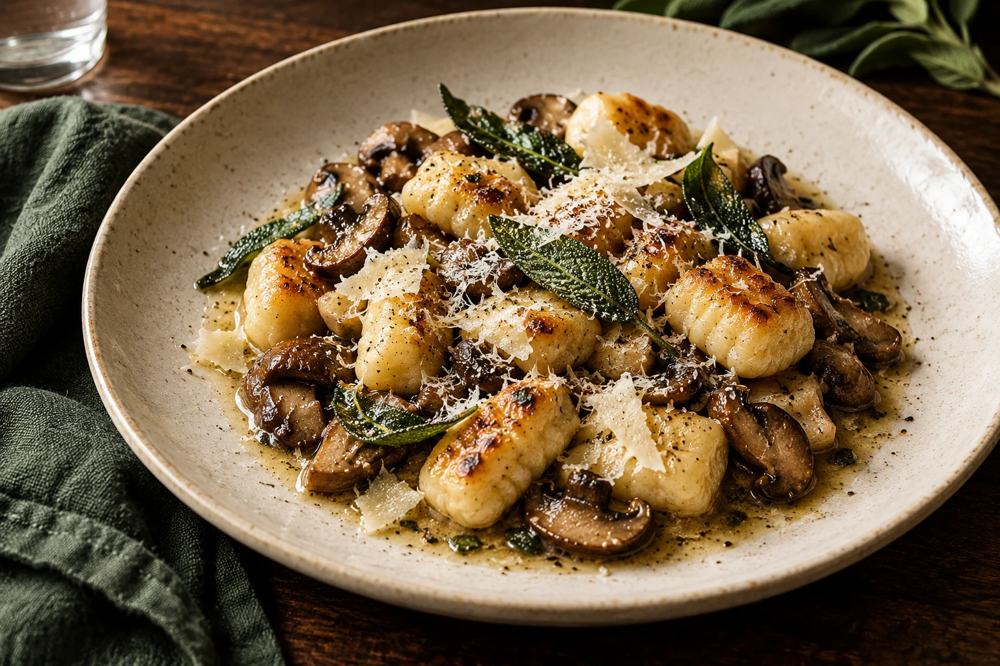

Corriger ce qui gêne la lecture
Titres et descriptions distincts, textes alternatifs utiles, liens internes et coordonnées cohérentes.
Rapport SEO et concurrence
Une analyse plus approfondie pour relier les recherches locales à l’offre de Maison Sauge et préparer les bonnes pages.

Le contenu est le premier chantier.Le site imaginé présente le lieu, mais répond encore peu aux recherches de carte, de saison et de proximité.
Télécharger le rapport PDFLa marque se retrouve facilement dans le scénario. Les recherches qui décrivent l'activité restent moins bien couvertes.
Les constats du rapport local deviennent ici un plan : carte accessible, information pratique cohérente, histoire du lieu et pages utiles aux intentions de recherche.
Exemples de sorties d’une recherche SEO
| Requête illustrative | Volume mensuel simulé | Position simulée | Page proposée |
|---|---|---|---|
| bistrot Annecy | 880 | 18 | Accueil & localisation |
| restaurant de saison Annecy | 390 | 24 | Cuisine de saison |
| restaurant végétarien Annecy centre | 260 | Non visible | Carte & options végétales |
| Maison Sauge menu | 140 | 2 | Menu |
Volumes et positions inventés pour cet exemple. Ils ne proviennent ni de Google ni d'un fournisseur de données.
Comparaison de trois profils imaginés
| Établissement fictif | Atout dans le scénario | Ce que Maison Sauge peut travailler |
|---|---|---|
| Atelier BrumeBistrot de quartier | Menu HTML facile à parcourir | Présenter la carte sans imposer un PDF |
| La Table des AulnesCuisine de saison | Photos cohérentes et offre bien expliquée | Relier le plat signature à l’histoire du lieu |
| Comptoir LisièreRestaurant de centre-ville | Accès, horaires et contact immédiatement visibles | Donner les informations pratiques dès l’accueil |
Titres et descriptions distincts, textes alternatifs utiles, liens internes et coordonnées cohérentes.
Menu HTML, cuisine de saison, options végétales et accès au restaurant. Chaque page doit avoir une utilité réelle.
Contrôle mobile, chargement des images, navigation, lisibilité et validation des informations par le propriétaire.
Indice illustratif : moyenne des trois dimensions. Ce rapport reprend le même dossier que l'audit local. Il montre une restitution cible, sans mesure réelle ni promesse de classement.
Transformer la carte, l’ambiance et les informations pratiques en une expérience cohérente.